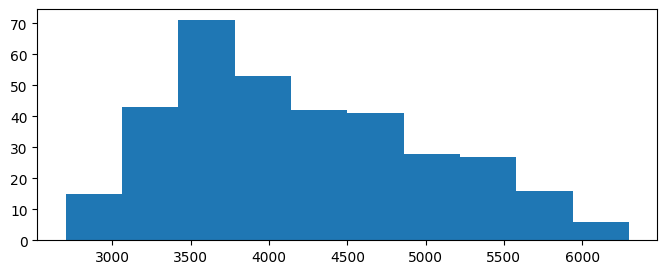
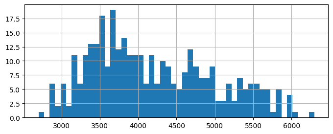
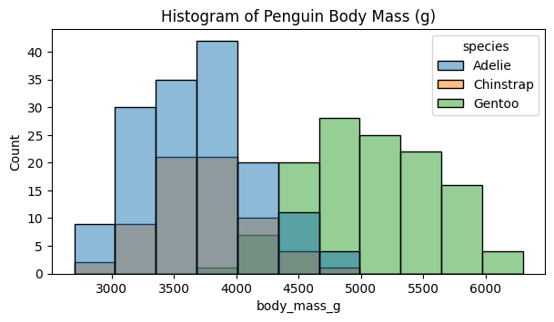
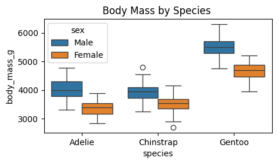
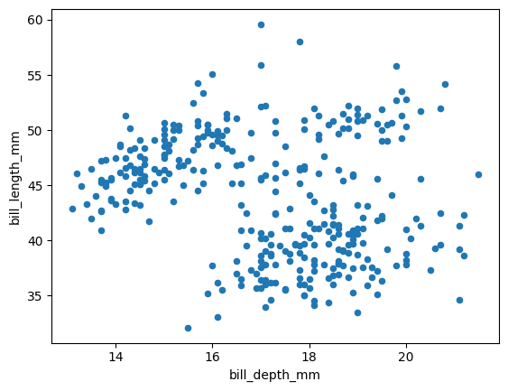

#pip install --upgrade seaborn pandas
#pip install seaborn
#pip install pandas
import warnings
warnings.simplefilter(action='ignore', category=FutureWarning)
import numpy as np#why is this not enough?
#1. Dataframes !!! (tabular, )
#2. group_by !!
# module polars ?
# in general there is a constant tension between speed and comfort
import pandas as pd
import seaborn5 Data Science with Penguins
6 Palmer Penguins
Look at the data
import seaborn as sns
import matplotlib.pyplot as plt
import numpy as np
penguins = sns.load_dataset("penguins")
penguins| species | island | bill_length_mm | bill_depth_mm | flipper_length_mm | body_mass_g | sex | |
|---|---|---|---|---|---|---|---|
| 0 | Adelie | Torgersen | 39.1 | 18.7 | 181.0 | 3750.0 | Male |
| 1 | Adelie | Torgersen | 39.5 | 17.4 | 186.0 | 3800.0 | Female |
| 2 | Adelie | Torgersen | 40.3 | 18.0 | 195.0 | 3250.0 | Female |
| 3 | Adelie | Torgersen | NaN | NaN | NaN | NaN | NaN |
| 4 | Adelie | Torgersen | 36.7 | 19.3 | 193.0 | 3450.0 | Female |
| ... | ... | ... | ... | ... | ... | ... | ... |
| 339 | Gentoo | Biscoe | NaN | NaN | NaN | NaN | NaN |
| 340 | Gentoo | Biscoe | 46.8 | 14.3 | 215.0 | 4850.0 | Female |
| 341 | Gentoo | Biscoe | 50.4 | 15.7 | 222.0 | 5750.0 | Male |
| 342 | Gentoo | Biscoe | 45.2 | 14.8 | 212.0 | 5200.0 | Female |
| 343 | Gentoo | Biscoe | 49.9 | 16.1 | 213.0 | 5400.0 | Male |
344 rows × 7 columns
#ämap:
pDict = {"Adelie": 1,
"Chintoo": 2}
7 Simple Summary Stats
- How many on each island ?
- What are the mean weight and flipper length ?
- What do the distributions of weight and flipper length look like?
- Are there differences in the body mass of penguins by sex within each species?
- Repeat all of the above grouping by species.
- Try numerical and graphical summaries
# @title How many on each island ?
penguins.groupby("island").species.count()
np.unique(penguins.island, return_counts = True)(array(['Biscoe', 'Dream', 'Torgersen'], dtype=object), array([168, 124, 52]))# @title What are the mean weight and flipper length ?
#np.mean(penguins[["flipper_length_mm", "body_mass_g"]])
#left to right operations !!
penguins[["flipper_length_mm", "body_mass_g"]].mean()
#Repeat the above grouping by species.
penguins.groupby("species")[["flipper_length_mm", "body_mass_g"]].mean()| flipper_length_mm | body_mass_g | |
|---|---|---|
| species | ||
| Adelie | 189.953642 | 3700.662252 |
| Chinstrap | 195.823529 | 3733.088235 |
| Gentoo | 217.186992 | 5076.016260 |
penguins.groupby("species")["body_mass_g"].mean()
#is there another way than the quote to access single columns?:
penguins.groupby("species").body_mass_g.mean()
#this can be dangerous in certain situations
penguins["body_mass_g"]
#note2self: could this work for multiple columns ??| body_mass_g | |
|---|---|
| species | |
| Adelie | 3700.662252 |
| Chinstrap | 3733.088235 |
| Gentoo | 5076.016260 |
# @title mean flipper length200.91520467836258#histogram of weight:
plt.figure(figsize=(8,3));
plt.hist(penguins.body_mass_g, bins = 10);
plt.figure(figsize=(8,3));
penguins.body_mass_g.hist(bins=50);
# Histogram for weight (body mass)
plt.figure(figsize=(5, 2.5))
sns.histplot(data = penguins, x ="body_mass_g",hue = "species", alpha = 0.25);
Grouping
The seaborn library offers simple grouping in their plots via the hue argument:

Box plots
Side-by-side comparisons are much easier with box plots:
# Box plot of body mass by species and sex
plt.figure(figsize=(5, 2.5))
sns.boxplot(data = penguins, y ="body_mass_g", x="species", hue = "sex")
plt.title('Body Mass by Species ');
plt.show();
Scatter Plots
# @title bill_length_mm vs bill_depth_mm
plt.figure(figsize=(4, 2));
from matplotlib import pyplot as plt
penguins.plot(x = "bill_depth_mm", y = "bill_length_mm", kind = "scatter");
plt.figure(figsize=(4, 2));
# there are clearly MANY scatter plots that we can look at !
# It would require a lot of code to create that many
# 4*3/2
#correlation coefficient quantifies the linear dependence
# it is in the range [-1,1]
np.corrcoef(penguins.bill_depth_mm, penguins.bill_length_mm)
#What is nan ?array([[nan, nan],
[nan, nan]])<Figure size 400x200 with 0 Axes>
<Figure size 400x200 with 0 Axes>8 The powerful pandas
When we want to group numerical summaries by categorical variables, the pandas library is VERY useful.
So let us repeat the previous inquiries.
Simple Summary Stats
- How many on each island per species?
- What are the mean weight and flipper length per species and sex?
- Are there differences in the body mass of penguins by sex within each species?
#left to right sequential command logic:
penguins.flipper_length_mm.mean().round(2)200.929 Simpson’s Paradox
# @title pairwise scatter plots
g=sns.pairplot(penguins, kind="reg", plot_kws={'line_kws':{'color':'red'}}, corner=False);#
g.map_upper(sns.kdeplot, levels=4, color=".2");
plt.show()
The “data tells us” that * bill depth seems to decrease with bill length * flipper length and body mass seem to decrease with bill depth. * flipper length and body mass seem to increase with bill length.
Can we fit simple regression lines to prove our visual hypothesis?
# @title Simple Regression: bill_depth_mm versus bill_length_mm
import statsmodels.api as sm
import statsmodels.formula.api as smf
lm1 = smf.ols('bill_depth_mm ~ bill_length_mm', penguins).fit()
lm1.summary().tables[1]| coef | std err | t | P>|t| | [0.025 | 0.975] | |
| Intercept | 20.8855 | 0.844 | 24.749 | 0.000 | 19.226 | 22.545 |
| bill_length_mm | -0.0850 | 0.019 | -4.459 | 0.000 | -0.123 | -0.048 |
DataCamp uses the simpler np.polyfit(). But:
- no missing values allowed
- no statistical inference provided
# DataCamp uses the simpler `np.polyfit()`:
# Drop rows with NaN in the relevant columns before fitting
penguins_cleaned = penguins.dropna(subset=['bill_length_mm', 'bill_depth_mm'])
np.polyfit(penguins_cleaned.bill_length_mm, penguins_cleaned.bill_depth_mm, 1)array([-0.08502128, 20.88546832])# @title Simple Regression: flipper_length_mm vs. bill_depth_mm
lm2 = smf.ols('flipper_length_mm ~ bill_depth_mm', penguins).fit()
lm2.summary().tables[1]BUT: the interpretation of the data is model dependent ! The data does not “tell the truth” by itself:
# @title Slope Reversal
sns.pairplot(penguins, hue="species", kind="reg", plot_kws={'line_kws':{'color':'red'}}, corner=False);
plt.show()
# @title Interaction Terms in Regression
lm2a = smf.ols('flipper_length_mm ~ bill_depth_mm*species -1', penguins).fit()
lm2a.summary().tables[1]| coef | std err | t | P>|t| | [0.025 | 0.975] | |
| species[Adelie] | 159.6189 | 6.943 | 22.990 | 0.000 | 145.962 | 173.276 |
| species[Chinstrap] | 128.6967 | 11.173 | 11.518 | 0.000 | 106.718 | 150.675 |
| species[Gentoo] | 147.2243 | 7.795 | 18.887 | 0.000 | 131.892 | 162.557 |
| bill_depth_mm | 1.6534 | 0.378 | 4.379 | 0.000 | 0.911 | 2.396 |
| bill_depth_mm:species[T.Chinstrap] | 1.9907 | 0.714 | 2.790 | 0.006 | 0.587 | 3.394 |
| bill_depth_mm:species[T.Gentoo] | 3.0163 | 0.642 | 4.698 | 0.000 | 1.754 | 4.279 |
Categorical Variables
import pandas as pd
import seaborn as sns
import matplotlib.pyplot as plt
import numpy as np
import statsmodels.api as sm
import statsmodels.formula.api as smf
penguins = sns.load_dataset("penguins")
lm2a = smf.ols('flipper_length_mm ~ species -1', penguins).fit()
lm2a.summary().tables[1]| coef | std err | t | P>|t| | [0.025 | 0.975] | |
| species[Adelie] | 189.9536 | 0.540 | 351.454 | 0.000 | 188.891 | 191.017 |
| species[Chinstrap] | 195.8235 | 0.805 | 243.137 | 0.000 | 194.239 | 197.408 |
| species[Gentoo] | 217.1870 | 0.599 | 362.676 | 0.000 | 216.009 | 218.365 |
Quizzes
import numpy as np
from numpy.random import default_rng
rng = default_rng(70)
#Generate 500 random integers between 80 and 90 (both boundaries are inclusive!)
x = rng.integers(80,90, 500)
x
np.mean(x)
x.mean()
#every "fourth value"
#print(x[0:10])
#print(x[:10:4])
np.sum(x[::4])
x > 85
np.sum(x > 85)
np.sum(x == 81)
x = np.arange(1,13)
x
x.reshape(4,3)array([[ 1, 2, 3],
[ 4, 5, 6],
[ 7, 8, 9],
[10, 11, 12]])import numpy as np
url = "https://raw.githubusercontent.com/markusloecher/DataScience2018/master/data/diabetes.csv"
diabetes = np.loadtxt(url, delimiter=",", skiprows=1)
endRow=444
diabetes = diabetes[0:endRow,:]np.mean(diabetes[:,0])
max(diabetes[:,1] ) - min(diabetes[:,1] )
diabetes[-1,0]
np.sum(diabetes[:,6]>0.3825)
np.unique(diabetes[:,0], return_counts=True)(array([ 0., 1., 2., 3., 4., 5., 6., 7., 8., 9., 10., 11., 12.,
13., 14., 15., 17.]),
array([62, 77, 57, 42, 42, 45, 22, 31, 21, 15, 11, 4, 6, 6, 1, 1, 1]))